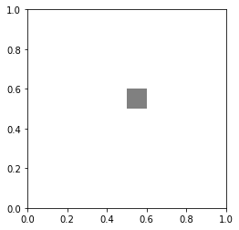
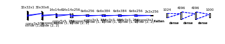
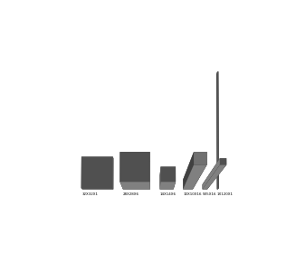

import matplotlib.pyplot as plt
import matplotlib.patches as patches
%matplotlib inlinesomeX, someY = 0.5, 0.5
fig,ax = plt.subplots()
ax.set_aspect("equal")
ax.add_patch(patches.Rectangle((0.5, 0.5), 0.1, 0.1,
alpha=1, facecolor='gray'))
import sys
sys.path.append("convnet-drawer/")from convnet_drawer import Model, Conv2D, MaxPooling2D, Flatten, Dense
from matplotlib_util import save_model_to_file
channel_scale = 1/5
model = Model(input_shape=(32, 32, 1))
model.add(Conv2D(6, (3, 3), (1, 1)))
model.add(MaxPooling2D((3, 3), strides=(2, 2)))
model.add(Conv2D(256, (5, 5), padding="same"))
model.add(MaxPooling2D((3, 3), strides=(2, 2)))
model.add(Conv2D(384, (3, 3), padding="same"))
model.add(Conv2D(384, (3, 3), padding="same"))
model.add(Conv2D(256, (3, 3), padding="same"))
model.add(MaxPooling2D((3, 3), strides=(2, 2)))
model.add(Flatten())
model.add(Dense(4096))
model.add(Dense(4096))
model.add(Dense(1000))
# save as svg file
model.save_fig("example.svg")
# save via matplotlib
save_model_to_file(model, "example.pdf")
model
##### from mpl_toolkits.mplot3d import Axes3D
import numpy as np
import matplotlib.pyplot as plt
def cuboid_data(o, size=(1,1,1)):
# code taken from
# https://stackoverflow.com/a/35978146/4124317
# suppose axis direction: x: to left; y: to inside; z: to upper
# get the length, width, and height
l, w, h = size
x = [[o[0], o[0] + l, o[0] + l, o[0], o[0]],
[o[0], o[0] + l, o[0] + l, o[0], o[0]],
[o[0], o[0] + l, o[0] + l, o[0], o[0]],
[o[0], o[0] + l, o[0] + l, o[0], o[0]]]
y = [[o[1], o[1], o[1] + w, o[1] + w, o[1]],
[o[1], o[1], o[1] + w, o[1] + w, o[1]],
[o[1], o[1], o[1], o[1], o[1]],
[o[1] + w, o[1] + w, o[1] + w, o[1] + w, o[1] + w]]
z = [[o[2], o[2], o[2], o[2], o[2]],
[o[2] + h, o[2] + h, o[2] + h, o[2] + h, o[2] + h],
[o[2], o[2], o[2] + h, o[2] + h, o[2]],
[o[2], o[2], o[2] + h, o[2] + h, o[2]]]
return np.array(x), np.array(y), np.array(z)
def plotCubeAt(pos=(0,0,0), size=(1,1,1), ax=None,**kwargs):
# Plotting a cube element at position pos
if ax !=None:
X, Y, Z = cuboid_data( pos, size )
ax.plot_surface(X, Y, Z, rstride=1, cstride=1, **kwargs)
sizes = [(32,32,1), (28, 28, 6), (14, 14, 6), (10, 10, 16), (5, 5, 16), (1, 120, 1)]
positions = [(0, 0, 0)]*len(sizes)
for i in range(1, len(sizes)):
positions[i] = (positions[i-1][0] + sizes[i-1][0]+10, 0, 0)
colors = ["grey"]*len(sizes)
fig = plt.figure()
ax = fig.gca(projection='3d')
ax.view_init(84, -90)
ax.set_aspect('equal')
ax.set_axis_off()
ax.set_xlabel('X')
ax.set_xlim(-5, positions[-1][0]+10)
ax.set_ylabel('Y')
ax.set_ylim(-1, 130)
ax.set_zlabel('Z')
ax.set_zlim(-1, 5)
#ax.set_visible(False)
for p,s,c in zip(positions,sizes,colors):
plotCubeAt(pos=p, size=s, ax=ax, color=c)
ax.w_zaxis.line.set_lw(0.)
ax.set_zticks([])
for i in range(len(positions)):
ax.text(positions[i][0], -5, 0, "X".join(str(x) for x in sizes[i]), color='black', fontsize=4)
fig.subplots_adjust(left=0, right=1, bottom=0, top=1)
fig.tight_layout()
plt.tight_layout()
plt.savefig("lenet.pdf", bbox_inches="tight", transparent=True, dpi=600)